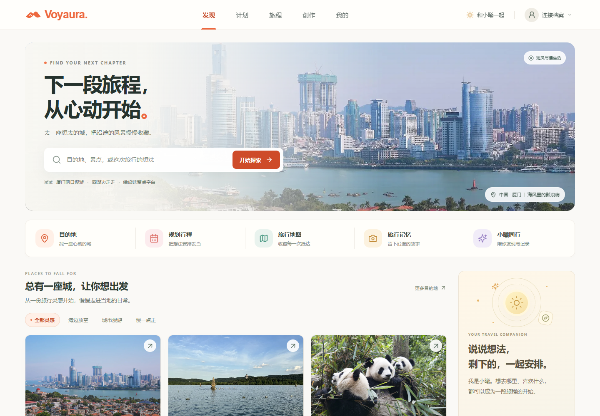
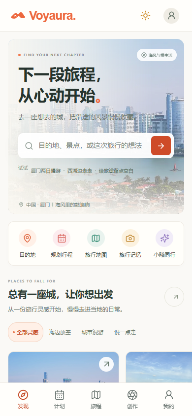
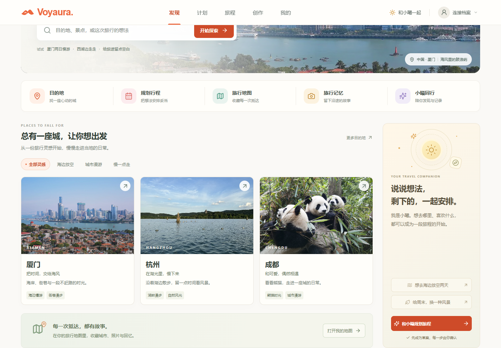
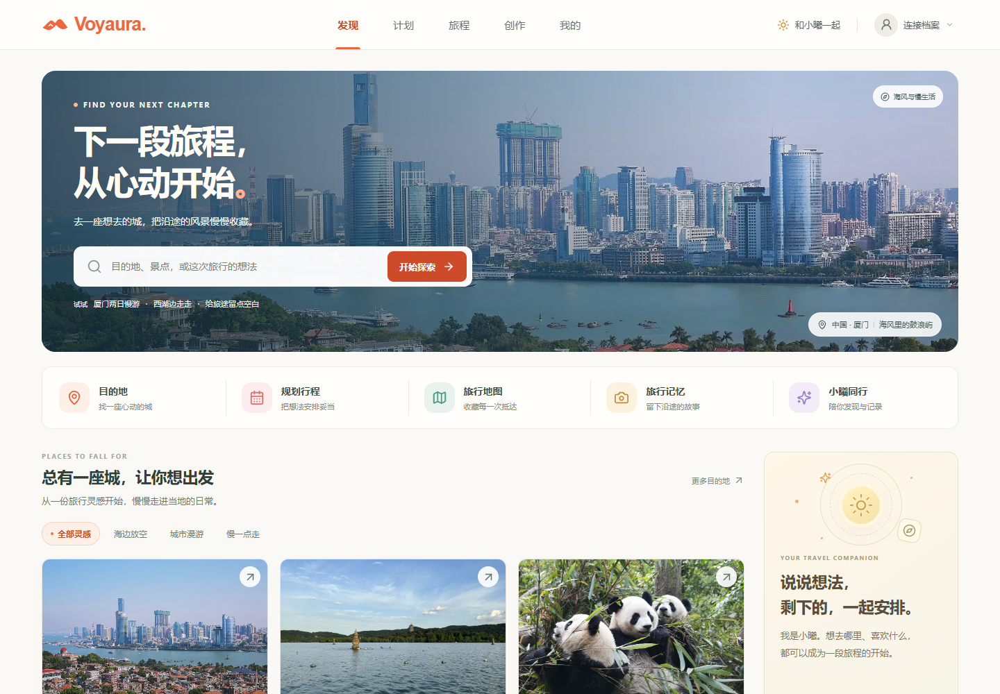
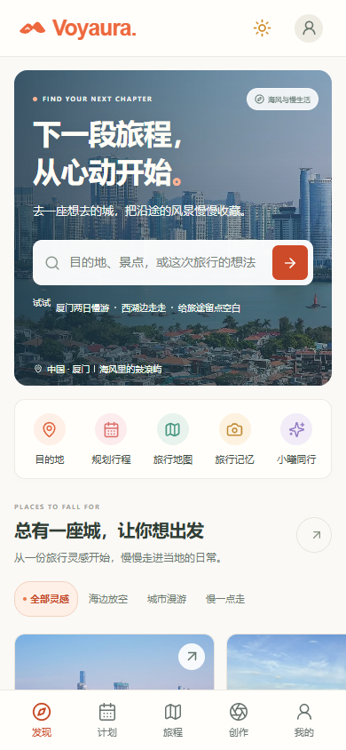
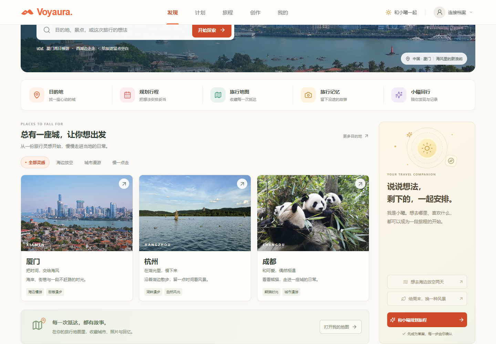
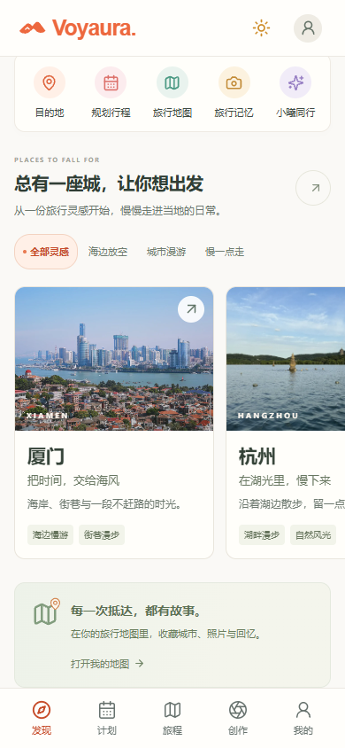

Voyaura · 第一轮改稿
发现首页＋全局导航。2026-11-23 用户已选择 A“清爽发现”，作为当前产品与后续改稿的视觉基准；B 保留为开发对照。截图来自真实浏览器，旅行灵感是编辑策划内容。
A · 清爽发现（已采用）
暖白渐变，与概念图更接近，搜索更突出。

手机首屏

目的地模块与小曦入口

B · 摄影沉浸（对照存档）
保留更多摄影细节，白色标题与深色渐变。

手机首屏

目的地模块与小曦入口

